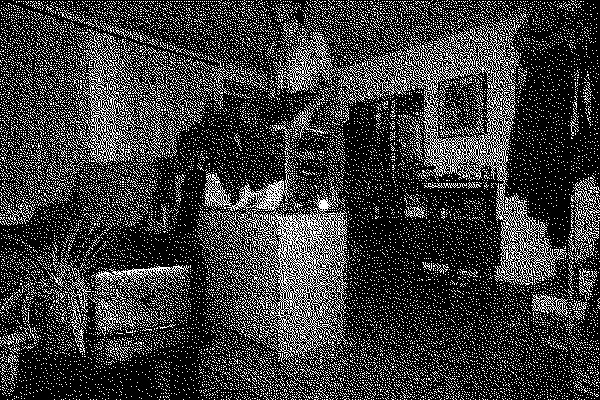

PROVA
denial. denial. planned hard into my skull. the hand unfolds but i can't read the cards.
i need the shades pulled down. be careful, or wasteful. you can not fall apart if you
don't waste your time on this or art. you want the shades pulled down? let's all draw straws.
see who has the most intentional flaws. i'm betting that mine is the shortest of all.
let's all do drugs. everyone fits like a transient glove. everybody wants somebody to love.
don't you want somebody to love?

デストロイ!!
真っ白けっけの汚点の様々
放り出して、鳴咽して
愛ね、暗いね
カモン!ミュージック!
テンションはFANTASTIC!
人生観、ヒント無し!
I know, You Know, 本能, 煩悩,
貞操トキメキアバンチュール
消えるように逃げて
今を越えていって
覚悟を決めたら
ラブリーゆきこさん
デストロイ!!
××寸前、1998年
許せぬバイオレンスto冷戦to
oh!oh! my GOD!
辛い今を喰らい
Don't know why? now!
チンプンカンプン
人間大概想定外
夢のような夢を
みせてくれませんか?
覚悟を決めたら
ラブリーゆきこさん
デストロイ!!
『愛』を喰いちぎって
『過去』を振り返って
もう泣くのはやめて
グッドデストロイ
キューティーハニー
消えるように逃げて
今を越えていって
覚悟を決めたら
ラブリーゆきこさん
デストロイ!!

>:(

>:$

los pétalos de tu rostro están floreciendo

Que hermosa cascada
La que forma tu cabello
Que hermosa cascada
La que forma tu cabello
Cuando estoy a tu lado
El tiempo es infinito
Cuando estoy a tu lado
El tiempo es infinito
Te veré en mis sueños profundos
Te veré en mis sueños profundos